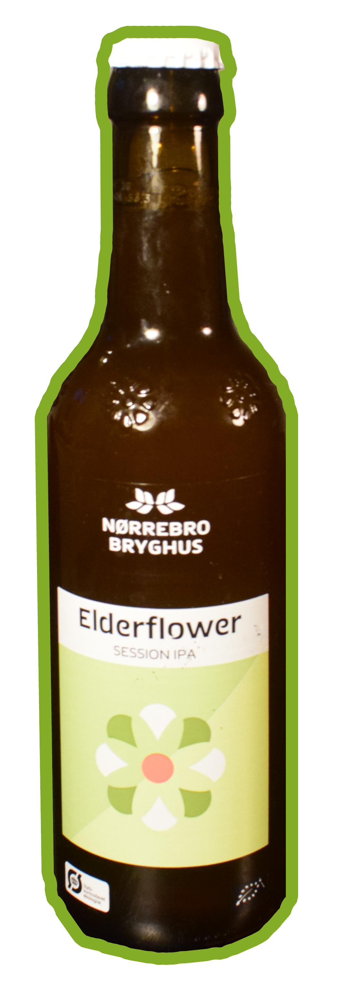
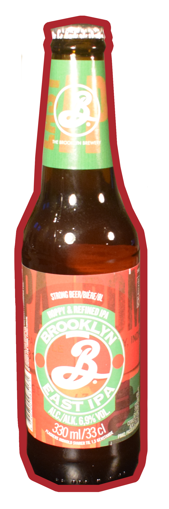

LOTTRUP UFILTRERET IPA
Ufiltreret IPA fra Lottrup er en flaskeøl. Flasken indeholder en uklar øl, der i et ølglas står med en flot, kraftig og hvid skumkrone – og så dufter den fantastisk frugtig. I munden føles øllet let cremet og forfriskende perlende, mens smagen er frugtig med lette citrustoner og en afsluttende, blød bitterhed. Drik den iskold, som den er, eller nyd den til lette retter.
- Sødme:⚫⚫⚫⚪⚪
- Fylde:⚫⚫⚪⚪⚪
- Bitterhed⚫⚫⚫⚪⚪
- Syrlighed:⚫⚫⚫⚫⚪
SCORE
★★★★☆

NØRREBRO BRYGHUS ELDERFLOWER SESSION IPA
En let drikkelig IPA fra Nørrebro Bryghus. En lysgylden, ufiltreret IPA med en tynd skumkrone der hænger flot. Den dufter kraftigt af citrus. Smagen er velbalanceret oplevelse af citrus, der rundes af med hyldeblomst. En velegnet introduktion til IPA øl, men erfarne IPA drikkere vil måske finde den for mild. Den fornærmer ingen og kan derfor nemt serveres for gæster på en varm sommerdag.
- Sødme:⚫⚫⚫⚪⚪
- Fylde:⚫⚫⚪⚪⚪
- Bitterhed⚫⚫⚫⚪⚪
- Syrlighed:⚫⚫⚫⚫⚪
SCORE
★★★★☆

BROOKLYN BREWERY EAST IPA
En flot filtreret lys gylden IPA, der desvære ikke imponerer. Fylden og bitterheden er som de skal være for en IPA, men den svage smag af citrus er ikke nok til at modspille bitterheden. En helt fundamental IPA, som nok kun er velegnet for de største IPA elskere.
- Sødme:⚫⚪⚪⚪⚪
- Fylde:⚫⚫⚪⚪⚪
- Bitterhed⚫⚫⚫⚫⚪
- Syrlighed:⚫⚫⚪⚪⚪
SCORE
★★☆☆☆
LÆS OGSÅ